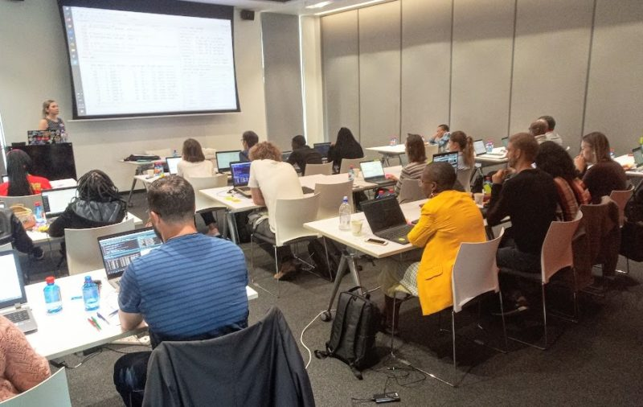

Southern Africa Project 2020

Using the satRday Johannesburg 2020 conference as a springboard, Forwards set up a project to help build the R community in Southern Africa. With funding from the Why R? Foundation, the R Consortium and a crowd-funding campaign, Forwards collaborated with local R users to run a series of training and community events in South Africa, Eswatini and Botswana. All the events promoted AfricaR, the pan-African network of R users, to help raise awareness of this community among R users in Southern Africa.
South Africa
The events began with Heather Turner assisting Bianca Peterson in running her 2-day Introduction to R Workshop hosted by PwC, Midrand.

Bianca Peterson with participants at the Introduction to R workshop, Johannesburg
This event was attended by over 20 participants, mostly from local businesses and organizations. Although Bianca and Heather were there because of the satRday, most of the participants were new to R and only came to the workshop. This demonstrates the potential for conferences to facilitate outreach events that grow the community. Due to fantastic support of the crowd-funding campaign, Forwards was able to award a scholarship to Ofentse Phuti-Rice, a Computer Science MSc student from Botswana. The scholarship enabled her to attend this workshop, the Web Scraping with R pre-satRday workshop led by Megan Beckett and Andrew Collier, and the satRday itself.
After the Introduction to R workshop, Heather joined fellow satRday keynote Colin Fay to speak at R-Ladies Johannesburg. Colin spoke on how to contribute to the R ecosystem - everything from sharing what you’re learning to writing a package - while Heather spoke about publishing and promoting your packages. This time the dozen or so attendees were R enthusiasts, most of whom would be at the satRday workshops and/or conference.

The folks at R-Ladies Johannesburg
The satRday workshops were the following day. Heather led a workshop using the latest iteration of the Forwards package development slides, with Bianca assisting. The workshop was open to all, however funding from the R Consortium supported scholarships for four women to attend: Astrid Radermacher, a postdoc at the University of Cape Town; Lillian Pazvakawambwa, a lecturer at the University of Namibia; Fransina Amutenya, a statistician at Namibia Statistics Agency and Caroline Akoth, Advocacy and Operations Lead, Women in GIS, Kenya. The scholarship enabled the recipients to attend the satRday conference as well as the workshop.

Heather Turner leading the R Package Development workshop, Johannesburg.
The satRday itself was attended by over 100 people, with many folk travelling from across South Africa and beyond to attend.

Participants waiting for the programme to start at satRday Johannesburg.
There was a packed programme of 2 keynote talks, 13 regular talks and 8 lightning talks - there are links to slides and videos in the programme. Heather gave a talk on Diversity and Inclusion in the R Community (Video, Slides), focusing on outreach to underrepresented groups beyond white women and the path to becoming an R (core) developer. The conference was also a great opportunity for networking, particularly among people from different cities/countries.

Emmanuel Ọlámíjùwọ́n, co-organizer of Eswatini UseR group, with Heather Turner, satRday Johannesburg.
Eswatini
After the satRday, Heather travelled to Eswatini to give a two-day workshop at the University of Eswatini, hosted by the Eswatini UseR group. Participants were mostly students/staff at the university, but a few came from outside organizations such as the revenue authority and a local non-profit. The workshop covered data import, data wrangling, data visualisation and linear modelling, and the participants created an R markdown report based on a case study.

Participants at Introduction To R workshop, Eswatini, including two of the user group organizers at the back by the windows, L: Garikayi Chemhaka, R: Nontsikelelo Shongwe
There was a lot of interest in more advanced topics, such as handling missing data, working with big data and machine learning. At the end of the workshop, Heather gave a talk on the R Community and Free Resources so that participants would know how to get support and materials for further learning.

Mbongeni Dube, co-organizer of Eswatini UseR group, outside the workshop venue.
Gaborone
Due to a flight cancellation (unrelated to COVID-19), Heather was not able to visit Gaborone as planned. However the organizers from the new Botswana R Users group, along with co-organizers from WiMLDS Gaborone and PyData Botswana helped facilitate an Introduction to R tutorial, with Heather teaching remotely over Zoom. The tutorial gave a basic orientation of R/RStudio, before focusing on visualization with base R and ggplot2 (slides here, we skipped data wrangling).
The participants took some great photos, including our banner image and the one of women attendees below.

Women that attended the Introduction To R workshop, Botswana.
After the workshop, the Botswana R User group was officially launched. Heather gave her talk on the R Community and Free Resources, while Edson Kambeu gave an overview of the vision for the R User Group. Attendees took turns to introduce themselves: there were a number of students and people working as statisticians or data scientists; most people currently used SPSS or Python, but were interested to learn R.
Elsewhere
Those are all the events that have taken place so far. The original aim was also to run a tutorial and launch a R User Group in Namibia. This proved to be too difficult to arrange to coincide with Heather’s visit to the area, but useful connections were made and organizers at the University of Namibia have applied for a grant from The R Consortium to help launch a user group. There is also some funding left over from the crowdfunder, which we hope to use to support a tutor from South Africa to lead a tutorial in Windhoek, when circumstances allow it. We have also made connections to people interested in R (and QGIS) training in Lesotho and hope to follow that up if we can.
Summary
We’d like to thank all our supporters that made these events possible, especially the individuals that contributed to the crowdfunder. It was great that we were able to cover all the anticipated costs as well as fund some scholarships to the Johannesburg satRday and pre-conference workshops. The events helped to get many people started with R and hopefully inspired them to continue with it, supported by the local groups and wider community.
Photo credits
Photos from Gaborone by meetup attendees.
Photo of R-Ladies Johannesburg by Kirsty Lee Garson.
Photo of Eswatini UseR group by Emmanual Ọlámíjùwọ́n.